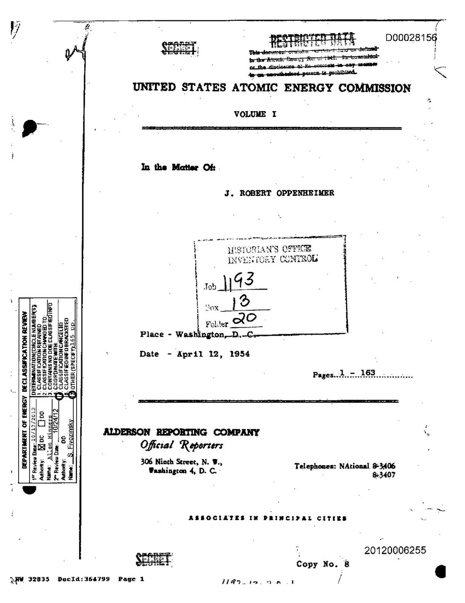
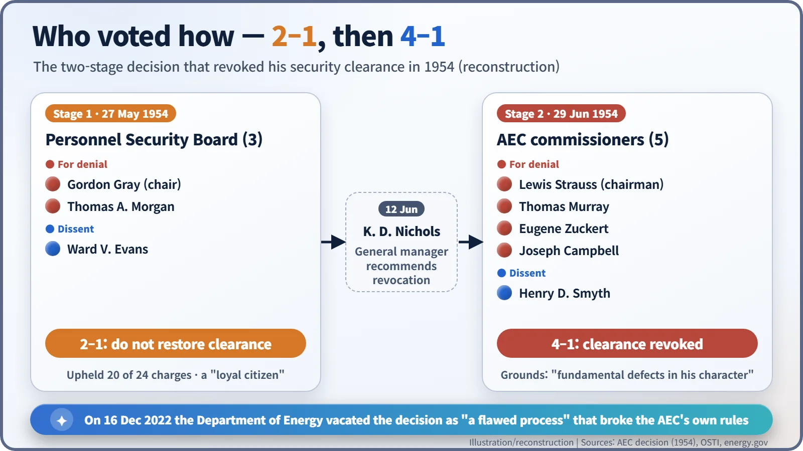
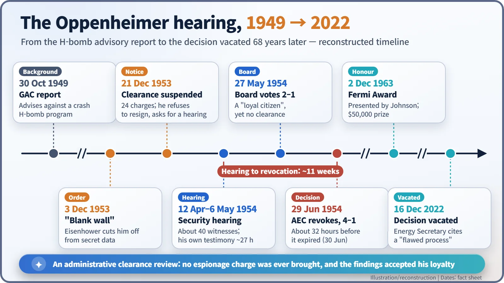
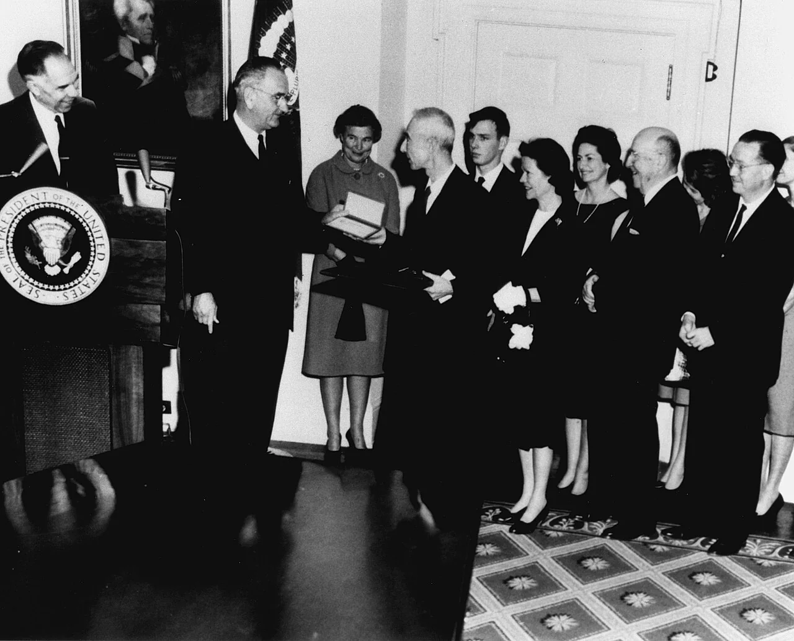

Nuclear History · 143
A File Marked "In the Matter Of" — the Oppenheimer Security Hearing (1954), When the Father of the Bomb Was Put Under Suspicion
Not a trial and no espionage charge, yet a 2–1 board and a 4–1 commission vote ended his access to secrets, until the Department of Energy vacated the decision 68 years later.
In the spring of 1954 J. Robert Oppenheimer, who had led the wartime laboratory at Los Alamos, faced a closed-door security hearing in Washington. It was not a criminal trial and he was never charged with espionage, but the Atomic Energy Commission revoked his security clearance by a 4–1 vote on 29 June 1954. In 2022 the US Department of Energy vacated that decision as the product of a flawed process.
A file marked "In the Matter Of"
"In the Matter Of: J. ROBERT OPPENHEIMER." The line is typed in the middle of a cover sheet. Above it: "United States Atomic Energy Commission, Volume I." Below it: "Place – Washington, D.C. Date – April 12, 1954." Nine years after he led the laboratory that built the atomic bomb, the man most closely identified with it had become the subject of a government file. [2]

Not a trial, though it felt like one
First, a common misunderstanding. This was not a criminal trial, and Oppenheimer was never charged with espionage. What was under review was his security clearance, his permission to see classified information. In workplace terms, it was less a prosecution than a decision about whether to keep renewing someone's building pass. The difference was that this pass-holder was the public face of the atomic bomb.
It began in November 1953, when William L. Borden, former staff director of Congress's Joint Committee on Atomic Energy, wrote to FBI Director J. Edgar Hoover arguing that Oppenheimer was "more probably than not" a Soviet agent. On 3 December, President Eisenhower ordered that a "blank wall" be placed between Oppenheimer and the nation's secrets. On 21 December, Atomic Energy Commission (AEC) chairman Lewis Strauss told him his clearance was suspended and suggested he resign quietly. Oppenheimer refused and asked for a hearing. [3]
The letter of charges listed 24 items. Twenty-three concerned his associations with Communists and left-wing friends and relatives in the 1930s and 1940s. One concerned his conduct on the hydrogen bomb: in 1949, as chairman of the AEC's General Advisory Committee, he had signed a report advising against a crash program to build it.
Three and a half weeks, forty witnesses and "a tissue of lies"
The hearing ran behind closed doors from 12 April to 6 May 1954 in a temporary AEC building in Washington. A three-member Personnel Security Board chaired by Gordon Gray heard the case. The AEC's counsel, Roger Robb, acted in effect as prosecutor; Lloyd K. Garrison defended Oppenheimer without fee. Around 40 witnesses appeared, and Oppenheimer himself spent about 27 hours on the stand. [3]
The most damaging episode dated from 1943. His friend Haakon Chevalier had mentioned that there was a channel for passing technical information to the Soviet Union. Oppenheimer reported the approach to security officers late, and in a version that was not true. Under Robb's cross-examination he called the story he had told back then "a tissue of lies." [2]
Colleagues testified too. Edward Teller told the board: "I would like to see the vital interests of this country in hands which I understand better, and therefore trust more." That sentence would divide the physics community for years. [3]
Two to one, then four to one

On 27 May the board voted 2–1 against restoring his clearance. Gray and the industrialist Thomas A. Morgan formed the majority; the chemist Ward V. Evans dissented. Yet the same report described Oppenheimer as a "loyal citizen." Its concerns were his associations, his judgement and his attitude to the security system.
On 29 June the five AEC commissioners made the final decision: 4–1 to revoke. Strauss, who wrote the majority opinion, pointed to "fundamental defects in his character." The lone dissenter was the physicist Henry DeWolf Smyth, author of the 1945 official report on the Manhattan Project. Oppenheimer's consulting contract, and with it his clearance, was due to expire on 30 June anyway. The commission revoked, about 32 hours early, a clearance that was about to lapse on its own. [2] [3]
One record, two readings
Judgements still differ. Kai Bird and Martin Sherwin, in their biography American Prometheus (2005), and many other historians emphasise the process: the board had read FBI files in advance that the defence could not see, and it later emerged that Oppenheimer's conversations with his lawyers had been monitored. The AEC majority of 1954, by contrast, held that honesty is the core requirement for anyone handling secrets, and gave great weight to Oppenheimer's own admission of a false account. Historians also disagree on whether he was ever a Communist Party member: Gregg Herken has argued he may have belonged to a closed party unit, while Bird and Sherwin concluded he was not a member. What is clear is that no official finding produced evidence of espionage. [5] [6]
A medal, and a decision vacated 68 years later

Oppenheimer remained director of the Institute for Advanced Study in Princeton, but the door to government advice was closed. On 2 December 1963 President Lyndon B. Johnson presented him with the Enrico Fermi Award, a gold medal, a citation and $50,000, in the White House Cabinet Room. Johnson noted that President Kennedy had signed the award before his assassination. In reply, Oppenheimer said: "I think it just possible, Mr. President, that it has taken some charity and some courage for you to make this award today." [4]

His clearance was never restored, and he died on 18 February 1967, aged 62. The full original transcript was released only in 2014. On 16 December 2022, Energy Secretary Jennifer Granholm vacated the 1954 decision, saying the clearance had been revoked "through a flawed process that violated the Commission's own regulations." That order corrected the process; it did not rule on whether his policy views were right. The 2023 film Oppenheimer revisited the hearing room, but as a drama it takes liberties with the record. [1] [2]